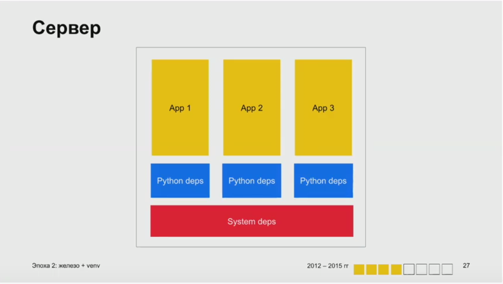

Как развивался Python в Яндексе
Александр в Яндексе с 2008 года, писал Афишу и другие сервисы, потом ушёл во внутренние сервисы. Сейчас руководит отрядом из 30 питонистов.
Важно: Яндекс — большая компания, потому сложно сказать про всех сразу. Доклад Александра — в первую очередь про его опыт в Яндексе, его интерпретация событий.
Введение
Эволюцию Python в Яндексе можно разделить на эпохи. Их границы — это переход к новым инструментам и подходам.
- Железо
- Железо + venv
- Контейнеры
- Бинарная сборка
Вот что важно рассказать про каждую эпоху:
- Инфраструктура
- Фреймворки
- Работа с зависимостями
- Общий код
- Среда разработки
- Плюсы и минусы
Эпоха 1: железо, 2008-2011
«Куда все идут» — часть Афиши и первый сервис на Django. Следом шла сама Афиша, Погода, Телепрограмма.
Инфраструктура
Приложения работают просто на железных машинах, объединенных в большие общие кластера.
ОС – Debian/Ubuntu.
Приложения запускаются initd, общаются с веб-сервером через FastCGI (flup).
Фреймворки
Django, CherryPy, Web.py
Зависимости
Работа с зависимостями была устроена так:
- Собираем deb-пакет с кодом проекта;
- Для каждой зависимости тоже свой пакет;
- Дополняем своими пакетами системный репозиторий.
Общий код
В компании появляется много собственного кода, который используют все команды. Такой внутренний опенсорс. Все библиотеки — в отдельных репозиториях, каждая заворачивается в deb-пакет.
Типичный сервер выглядит так:

Следствие: на одном сервере все приложения должны иметь одинаковые зависимости. Чем больше приложений на сервере, тем сложнее всё это поддерживать.
Среда разработки
- Для всех — удаленно на дев-сервере.
- Если сотрудник работает на линуксе, то локально на своей машине
- Если работает на Windows, то в виртуальной машине.
Плюсы и минусы
- :x: Приложениям тесно на общем кластере.
- :x: У всех приложений должны быть одинаковые зависимости.
- :x: Приложения с общими зависимостями нужно релизить ОДНОВРЕМЕННО. Разумеется, это ведёт к многократным откатам на прошлый релиз и прочему веселью.
- :x: Сильная зависимость от инфраструктуры Debian.
Почему вообще стали использовать Django
Автор уже рассказывал об этом на одной конференции 11 лет назад. С тех пор всё ещё любит Django, и вот почему:
- низкий порог входа
- большая экосистема
- много специалистов на рынке труда
- есть всё необходимое для работы
- достаточная гибкость
Эпоха 2: железо + venv, 2012-2015
Инфраструктура
В инфраструктуре появились «виртуалки»: OpenVZ, LXC и другие. Но их только пробовали, технология была слабо развита, всё равно все жили в общих кластерах.
Запуск приложений теперь через upstart или systems. Отказались от FastCGI в пользу WSGI (uwsgi) или HTTP (unicorn). Перешли на nginx в качестве основного вебсервера.
Фреймворки
Tornado, Flask, Celery для распределённых задач.
Зависимости
Работа с зависимостями: начали собирать виртуальное окружение. Ура, можно не ставить библиотеки в систему, а держать сколько нужно виртуальных окружений. Теперь пакуем venv вместе с кодом проекта в deb-пакет.
Теперь на сервере есть раздельные питоновые зависимости и общие системные:

Общий код
К этому моменту частично отказались от инфраструктуры Debian, да и deb-пакеты с зависимостями не подходят для venv. Поэтому подняли свой PyPI на базе Localshop. Сейчас в нём более тысячи внутренних пакетов.
Среда разработки
Поменялась к лучшему. Работаем в виртуальном окружении на любой ОС: Windows, Linux, macOS
Плюсы и минусы
- :heavy_check_mark: с venv стало проще жить на кластерах-общежитиях.
- :x: всё ещё есть общие системные зависимости
- :x: не все команды переехали на venv, некоторым проектам ещё нужны конкретные системные библиотеки Python.
Почему выбрали Tornado
Потому что это (был) современный асинхронный фреймворк. Альтернативы не понравились:
- gevent — внутри хак
- twisted — морально устарел
- asyncio — только в Python3, а на него ещё переехать надо.
Почему выбрали Celery
Потому что это хороший фреймворк для очередей задач. Используют до сих пор (2019 год). Поддерживает множество брокеров очередей: SQS, RabbitMQ, MongoDB, Redis. Наконец, просто чаще работает, чем не работает.
Эпоха 3: контейнеры, 2016-2018
Инфраструктура — внутреннее docker-совместимое облако. То есть там не docker, но стандартные образы можно туда пушить. Запуск приложений с помощью supervisord или uwsgi. Оказалось, что uwsgi хорошо справляется с задачей запуска процессов. И его же используют для HTTP.

Фреймворки
- появился Falcon. Например, Алису переписали с Django на Falcon.
- asyncio (наконец переехали на Python3)
Работа с зависимостями
- Всё внутри докер-образа. При сборке просто устанавливаем всё с помощью pip.
- Все системные зависимости тоже изолированы.
Но теперь стало сложнее внедрять общие подходы к сборке и обновлять общие зависимости.
Среда разработки
- Локально на любой ОС
- Разработка тоже через Docker
- Docker-compose помогает поднять сервисы на локальной машине и потестить,
даже несмотря на то, что целевое облако — не докер.
Плюсы и минусы
- :heavy_check_mark: полная изоляция
- :heavy_check_mark: удобный toolchain
- :heavy_check_mark: поддержка IDE
- :x: на не-Linux машинах с докером всё непросто, есть ограничения.
Почему Docker
- поддерживает большинство платформ
- эффективно
- хорошая экосистема
- де-факто стандарт, все умеют с ним работать
Эпоха 4: бинарная сборка, 2019…
Раньше весь Яндекс был на Debian-инфраструктуре. А теперь весь Яндекс идёт к большому монорепозиторию. Вокруг него есть механизм сборки, распределённого тестирования и куча других инструментов. В первую очередь это для кода на C++ и Go, но Python тоже подтягивается.
Мы собираем бинарь и оно просто работает на любой совместимой архитектуре. Чудо!

Плюсы и минусы
- :heavy_check_mark: Единый принцип сборки периложений во всей компании.
- :heavy_check_mark: Единообразная сборка с зависимостями.
- :heavy_check_mark: Если есть чекаут репозитория локально, то его достаточно, чтобы собрать проект.
- :heavy_check_mark: Удобство дистрибуции.
- :x: Порог входа: новому сотруднику нужно время, чтобы это освоить.
Выводы
- Эволюция неизбежна!
- Не бойтесь изменений
- Идите в ногу с внешними трендами
- Не отказывайтесь от проверенных решений
- Развивайте внутреннюю python-экосистему в компании
Вопросы
Q: Не было ли проблем с пакетами, которые работают глубоко в драйверах?
A: Иногда бывает, когда пакет завязан на системные зависимости и может, например, не работать в venv.
Тогда просто собираем deb-пакеты.
Q: Что насчёт CI?
A: Раньше использовали Teamcity, сейчас внутреннюю разработку.
Вообще в компании много разных CI используют.
Q: Были ли проблемы с ресурсами, например с модельками для машинного обучения? Как храните их?
A: Храним по-разному.
Q: Есть ли на одних и тех же серверах проекты из разных эпох?
A: В облаке только третья эпоха, а на кластерах бывают разные.
Пробовали выселять проекты из первой эпохи на отдельные серверы.